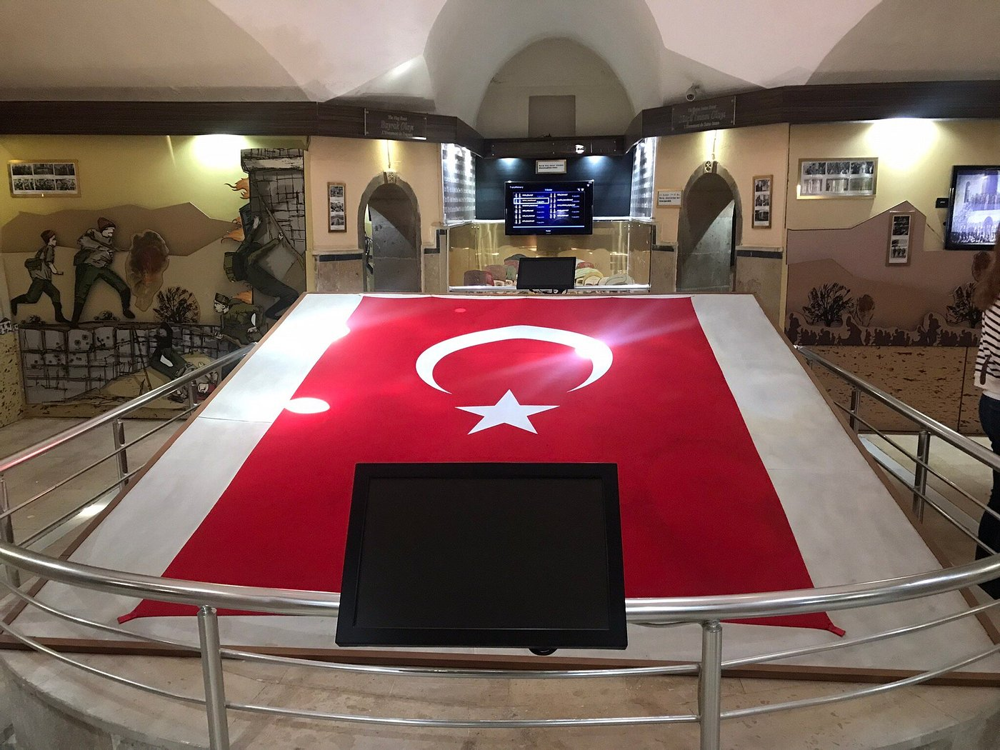

|  |
Kahramanmaraş Kurtuluş Müzesi, şehrin bağımsızlık mücadelesini ve Millî Mücadele dönemindeki kahramanlık destanını yaşatmak amacıyla kurulmuş önemli bir tarih müzesidir. Müze, aynı zamanda “İtalyan İşgal Komutanlığı Binası” olarak da bilinen tarihî bir yapıda hizmet vermektedir. Kurtuluş Savaşı sırasında Maraş halkının gösterdiği direnişi, belgeler, fotoğraflar, silahlar ve canlandırmalarla anlatan müze, hem yerel halk hem de ziyaretçiler için derin bir anlam taşır.
Müzenin sergi salonlarında, Maraş’ın 1920 yılındaki işgal süreci ve ardından gelen kurtuluş mücadelesi kronolojik bir şekilde anlatılmaktadır. Döneme ait arşiv belgeleri, gazete kupürleri, kahramanların kişisel eşyaları ve dönemin silahları sergilenmektedir. Ayrıca, kurtuluş mücadelesinin önde gelen isimlerinden Sütçü İmam, Rıdvan Hoca ve Aslan Bey gibi kahramanların hikâyeleri, özel panolarla ziyaretçilere aktarılmaktadır. Bu yönüyle müze, tarihî olayları yalnızca anlatmakla kalmaz; aynı zamanda ziyaretçiye duygusal bir deneyim de yaşatır.
Kurtuluş Müzesi, sadece savaşın askerî yönünü değil, halkın dayanışmasını ve vatan sevgisini de gözler önüne sermektedir. Kadınların ve çocukların da bu direnişte aktif rol oynadığı, belgeler ve canlandırmalarla vurgulanmıştır. Özellikle “Maraş’ın Kurtuluşu” dioraması, şehrin düşman işgalinden nasıl kurtulduğunu etkileyici bir biçimde yansıtmaktadır. Bu anlatımlar, müzeyi gezen herkesin millî bilincini güçlendirmektedir.
Binanın kendisi de tarihî bir eser niteliğindedir. Taş duvarları, yüksek tavanları ve özgün mimarisiyle 20. yüzyıl başı Osmanlı sivil mimarisini yansıtır. Müze binası, restorasyon çalışmalarıyla korunarak aslına uygun şekilde düzenlenmiştir. Bu sayede ziyaretçiler hem tarihî atmosferi hissedebilmekte hem de o dönemin ruhunu yaşayabilmektedir.
|